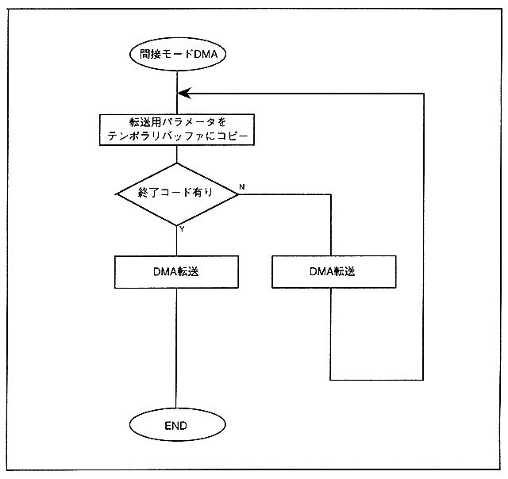

In contrast to the direct mode, the mode that performs DMA transfer by indirectly using the level-specific DMA set register is called indirect mode. In direct mode, the address value and the number of bytes stored in the set register are stored in the indirect mode temporary buffer in indirect mode, and DMA transfer is repeatedly executed until the end code is detected. Therefore, the feature of indirect mode is that multiple DMA transfers can be executed with one activation. Figure 2.5 shows the execution flow of indirect mode DMA.
Figure 2.5 Indirect mode DMA transfer flow
